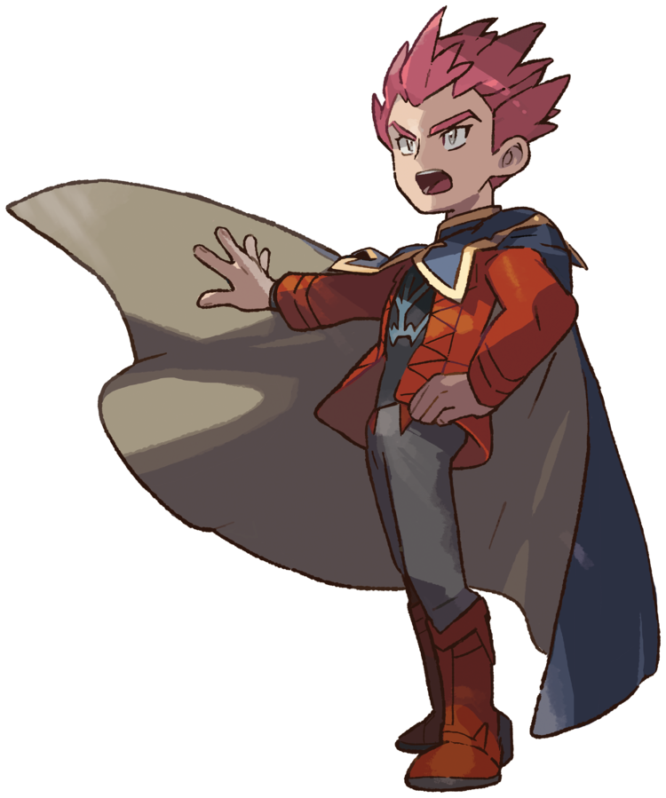
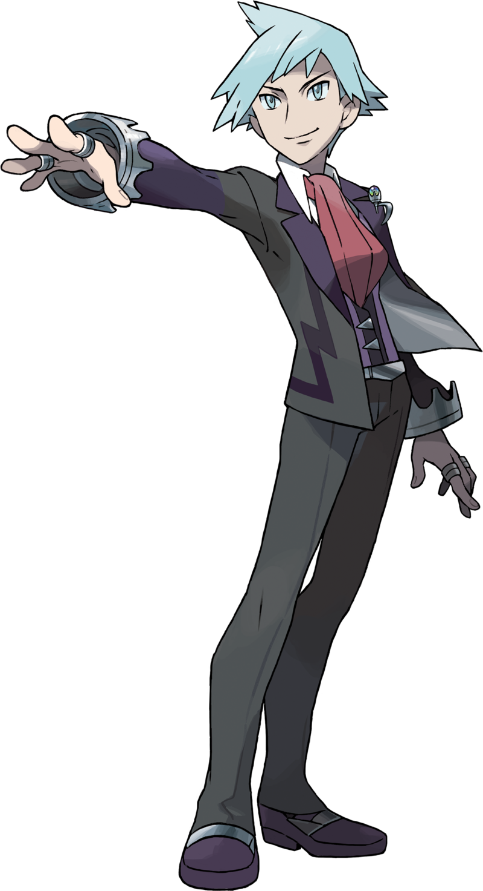
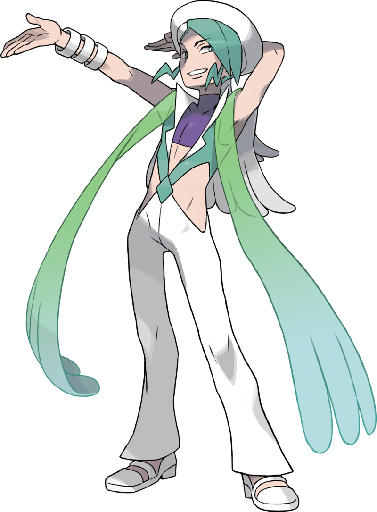
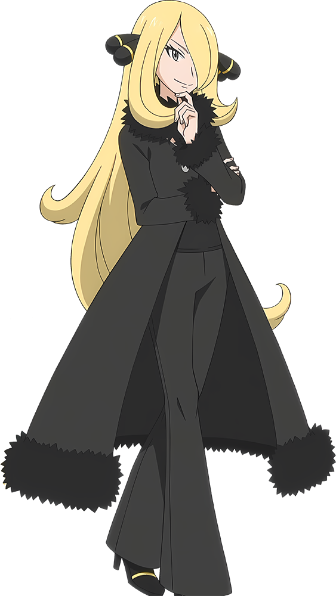
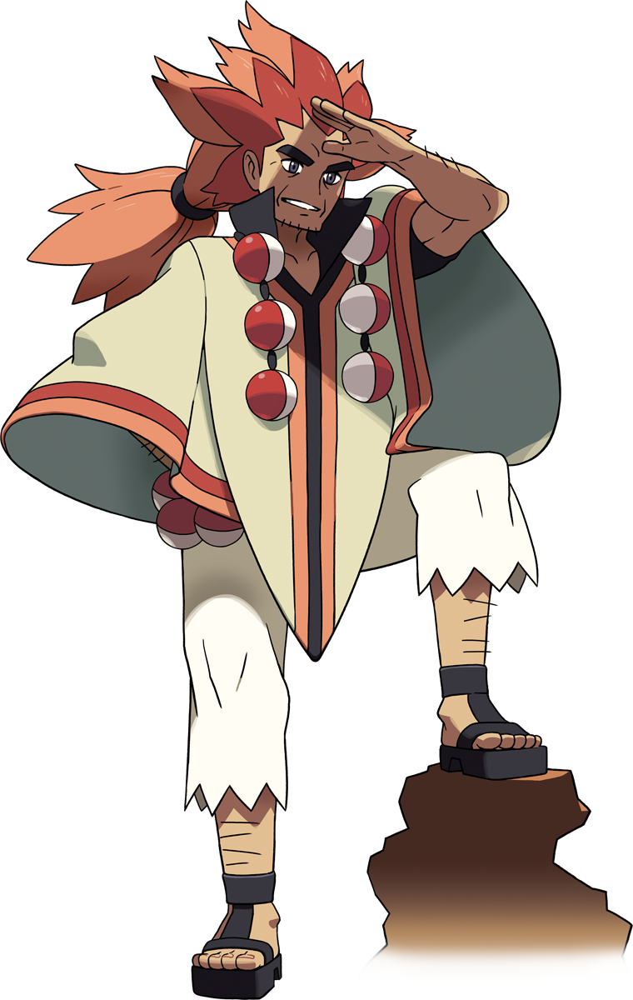
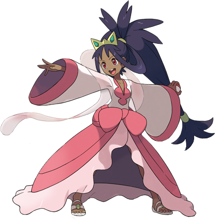
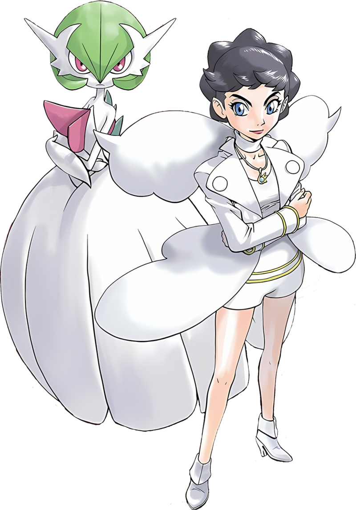
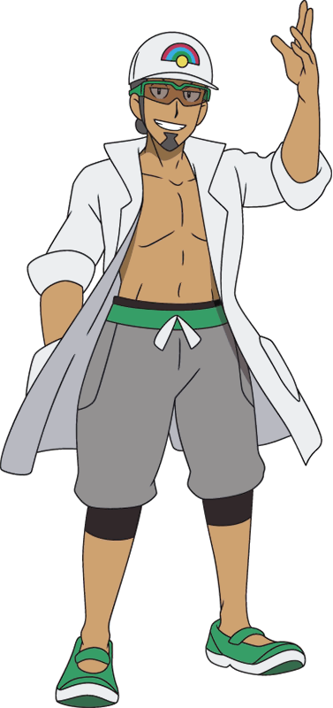
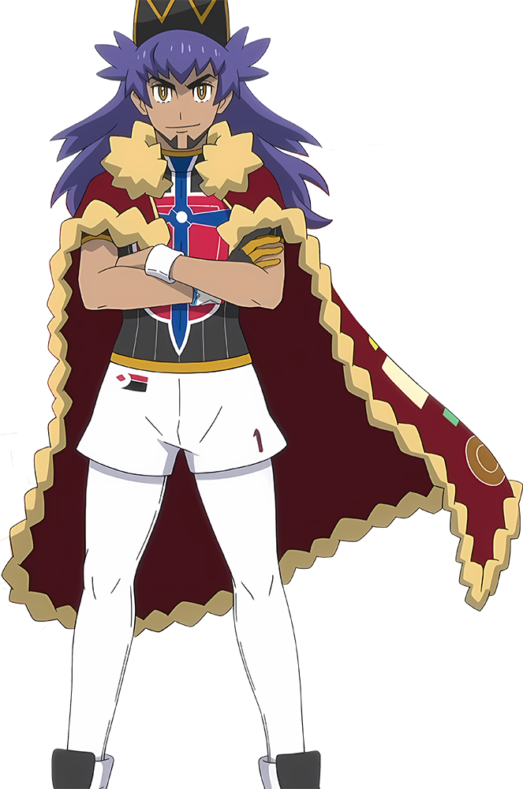
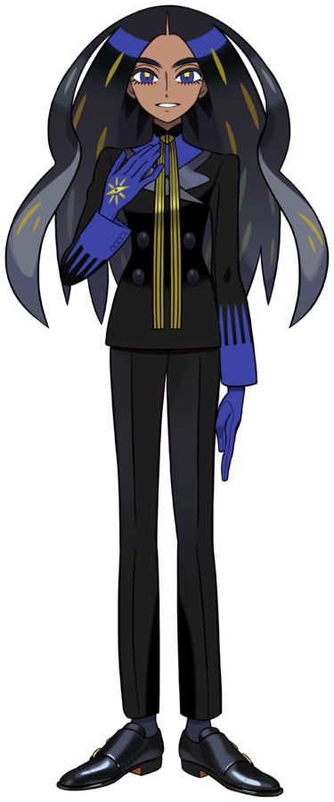

Solo los entrenadores más fuertes, estratégicos y decididos logran alcanzar el título de Campeón Pokémon. A lo largo de las diferentes regiones, estos grandes entrenadores han demostrado su talento en intensos combates y se han convertido en verdaderas leyendas. En esta página podrás conocer quiénes son los Campeones de cada región, descubrir sus Pokémon más emblemáticos y explorar datos interesantes sobre su historia. ¡Prepárate para recorrer el camino hacia la cima y conocer a los mejores entrenadores del mundo Pokémon!
-Región: Kanto y Johto.
-Generación: I y II.
-Especialidad: Pokémon de tipo Dragón.
-Primera aparición: Pokémon Red y Green (1996).
-Pokémon más representativo: Dragonite.
-Dato curioso: Antes de convertirse en Campeón de Johto, Lance formó parte del Alto Mando de Kanto y es reconocido por su gran dominio de los Pokémon Dragón.

-Región: Hoenn.
-Generación: III.
-Especialidad: Pokémon de tipo Acero y Roca.
-Primera aparición: Pokémon Ruby y Sapphire (2002).
-Pokémon más representativo: Metagross.
-Dato curioso: Es hijo del presidente de Devon Corporation y disfruta explorar cuevas en busca de minerales y piedras raras.

-Región: Hoenn..
-Generación: III.
-Especialidad: Pokémon de tipo Agua.
-Primera aparición como Campeón: Pokémon Emerald (2004).
-Pokémon más representativo: Milotic.
Dato curioso: Es un reconocido Coordinador Pokémon y reemplaza a Steven Stone como Campeón en Pokémon Emerald.

-Región: Sinnoh.
-Generación: IV.
-Especialidad: Equipo equilibrado.
-Primera aparición: Pokémon Diamond y Pearl (2006).
-Pokémon más representativo: Garchomp.
-Dato curioso: Es considerada una de las Campeonas más fuertes y populares de toda la franquicia Pokémon.

-Región: Unova.
-Generación: V.
-Especialidad: Equipo variado.
-Primera aparición: Pokémon Black y White (2010).
-Pokémon más representativo: Volcarona.
-Dato curioso: Antes del combate final, N derrota a Alder y ocupa temporalmente el puesto de Campeón.

-Región: Unova.
-Generación: V.
-Especialidad: Pokémon de tipo Dragón.
-Primera aparición como Campeona: Pokémon Black 2 y White 2 (2012).
-Pokémon más representativo: Haxorus.
-Dato curioso: Es la Campeona más joven de los videojuegos principales de Pokémon.

-Región: Kalos.
-Generación: VI.
-Especialidad: Equipo equilibrado.
-Primera aparición: Pokémon X y Y (2013).
-Pokémon más representativo: Mega Gardevoir.
-Dato curioso: Además de ser Campeona de la Liga Pokémon, también es una famosa actriz en la región de Kalos.

-Región: Alola.
-Generación: VII.
-Especialidad: Equipo variado.
-Primera aparición: Pokémon Sun y Moon (2016).
-Pokémon más representativo: Incineroar (dependiendo del Pokémon inicial elegido por el jugador).
-Dato curioso: Organizó la primera Liga Pokémon de Alola y fue el rival final antes de que el jugador se convirtiera en el primer Campeón de la región.

-Región: Galar.
-Generación: VIII.
-Especialidad: Equipo equilibrado.
-Primera aparición: Pokémon Sword y Shield (2019).
-Pokémon más representativo: Charizard.
-Dato curioso: Permaneció invicto durante años y era considerado el entrenador más fuerte de Galar.

-Región: Paldea.
-Generación: IX.
-Especialidad: Equipo variado.
-Primera aparición: Pokémon Scarlet y Violet (2022).
-Pokémon más representativo: Glimmora.
-Dato curioso: Es la presidenta de la Liga Pokémon de Paldea y posee el rango más alto entre todos los entrenadores con categoría de Campeón de la región.
